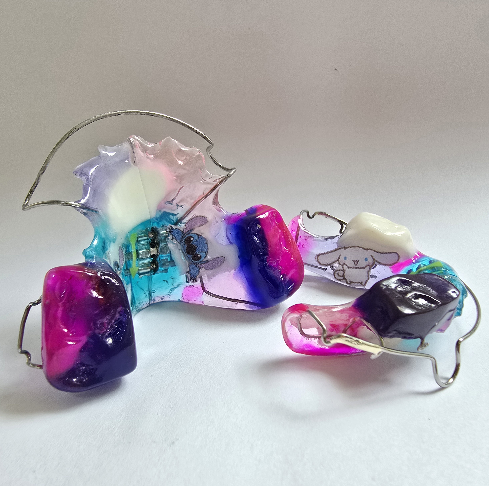
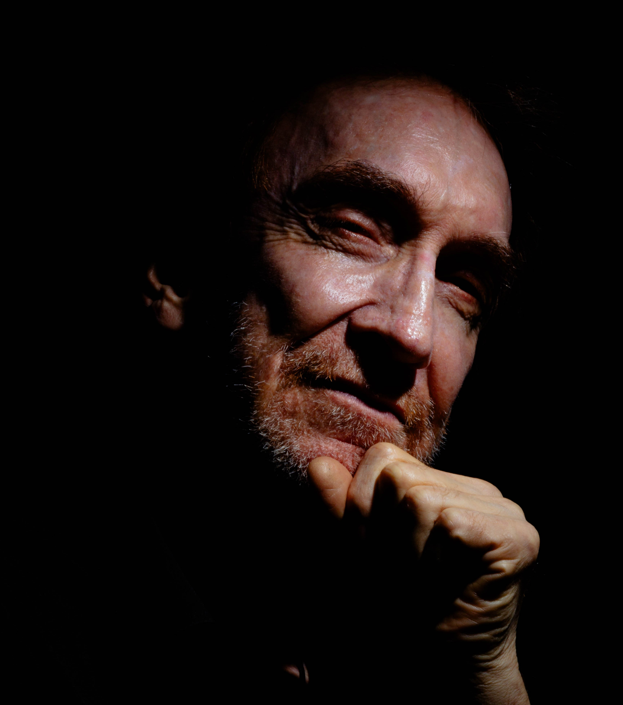
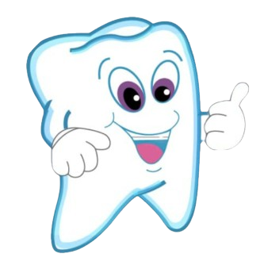

Aparatología personalizada
El sr. Ignacio Sánchez

Aparatología personalizada
El sr. Ignacio SánchezEl sr Ignacio Sánchez, técnico en mécanica dental con cuarenta años de experiencia, tiene una larga trayectoria de apoyo a la odontopediatría de la ciudad. Su amplio conocimiento y experticia en la materia nos han llevado a trabajar con grandes entidades dentro y fuera de la ciudad de Medellín.
Trabajamos bajo altos estándares de calidad, asegurando una excelente preparación y valorando la responsabilidad ética del campo.
La elaboración de cada pieza se articula con cuidado, cada paciente es único en su anatomía y necesidades, por lo tanto, la elaboración de cada pieza se asimila al trabajo de un artista.
En el video podemos visualizar el trabajo que toma realizar un BOTÓN PALATINO, donde se tiene en cuenta una cantidad de información explícita en la solictud del odontólogo, pero también mucha información implícita en la misma: cómo iniciar el trabajo, implicaciones anatómicas, ubicación específica de algunos aditamentos, comprensión del vocabulario técnico ondontológico, etc.